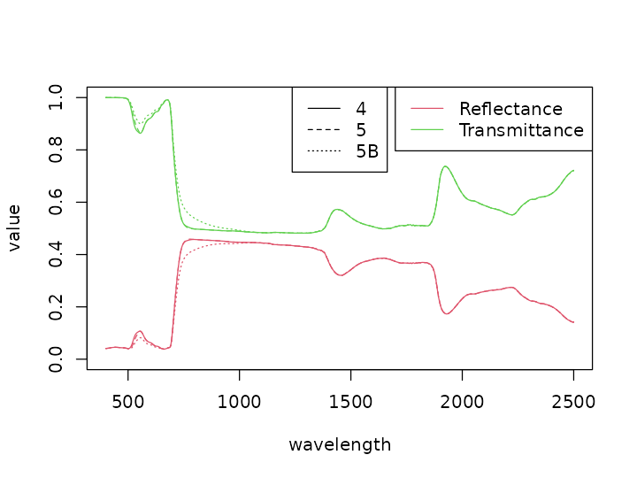
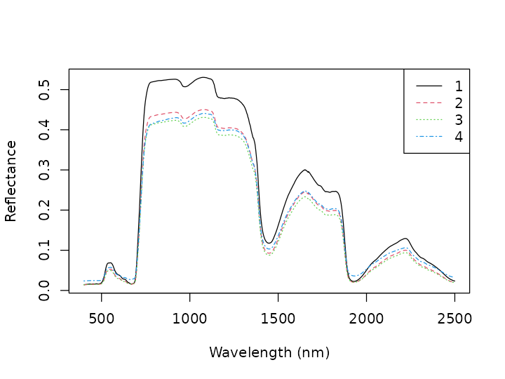
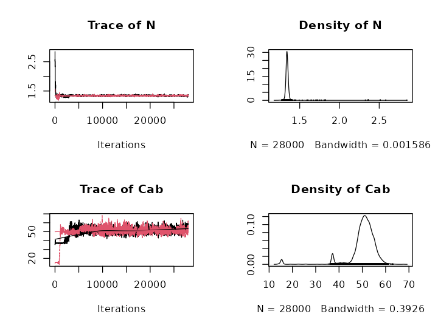
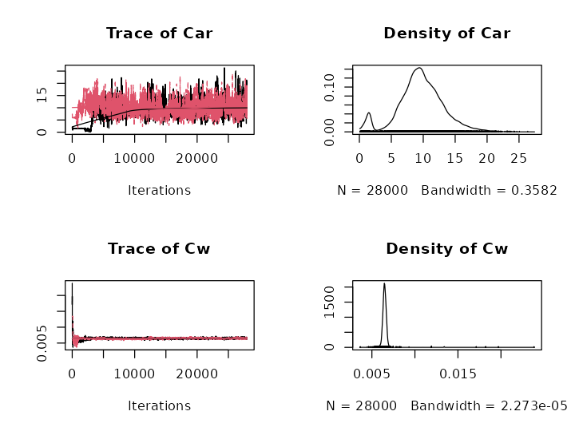
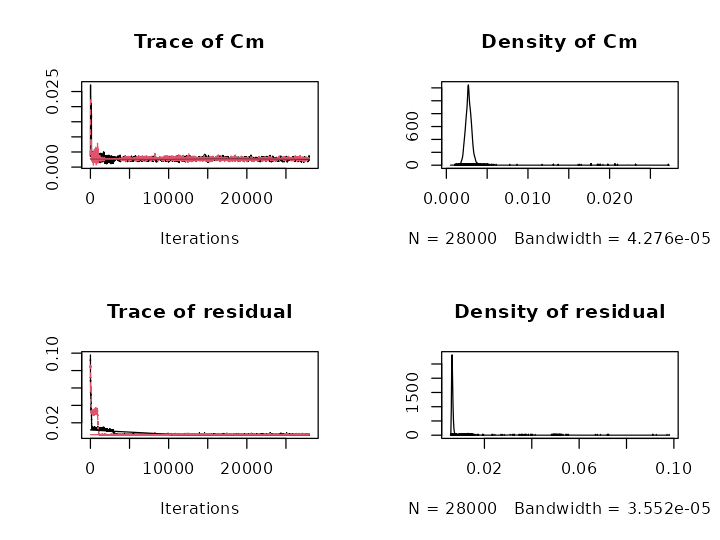
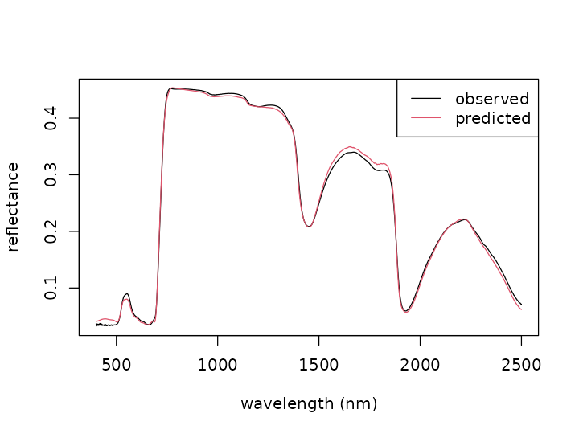

pecanrtm.vignette.RmdThe PEcAnRTM package provides tools for analyses involving common radiative transfer models. The highlights of this package are its ability to efficiently run a suite of related leaf and canopy radiative transfer models, as well as to perform maximum likelihood and, particularly, Bayesian inversions of these models.
The easiest way to install this package is via
install_github from the devtools package.
install.packages("devtools")
library(devtools)
install_github("ashiklom/pecan", subdir = "modules/rtm")
# Defaults to branch 'master'.
# For custom branches, add `ref = "branchname"`This package relies on a modern (>= 2003) Fortran compiler, as
determined by your R installation. On most Unix systems, this is
standard, but R may specify a particular compiler version that you don’t
have, resulting in an installation error. To fix this, simply add the
following to your system ~/R/Makevars file.
FC = gfortranAvailable radiative transfer models are called by passing a vector of their parameters. Similar models with different versions (e.g. PROSPECT 4, 5, 5B) also have a “version” argument. These models return a matrix of reflectance, transmittance, and/or absorption spectra (depending on the model) at 1 nm resolution over the wavelength range 400 to 2500 nm.
The PROSPECT family of models returns the reflectance (column 1) and transmittance (column 2) for an individual leaf as a function of 4 to 6 parameters (depending on the version).
library(PEcAnRTM)##
## Attaching package: 'PEcAnRTM'## The following object is masked from 'package:graphics':
##
## matplot
wl <- 400:2500
params <- c(
"N" = 1.4, "Cab" = 40, "Car" = 15,
"Cbrown" = 0.5, "Cw" = 0.002, "Cm" = 0.004
)
p4 <- prospect(params[c(-3, -4)], version = 4)
p4## reflectance transmittance
## 400 0.04099898 0.0001814716
## 401 0.04103723 0.0001699630
## 402 0.04106248 0.0001575602
## 403 0.04111370 0.0001452140
## 404 0.04120401 0.0001348522
## ...
## reflectance transmittance
## 2496 0.1422667 0.2801837
## 2497 0.1417965 0.2792691
## 2498 0.1420623 0.2795135
## 2499 0.1413868 0.2782765
## 2500 0.1418849 0.2788870Notice only the first and last few lines of the spectra are printed,
and the wavelength is annotated on the side. This is is because all RTM
simulations in this package are of a special matrix class
spectra.
class(p4)## [1] "spectra" "matrix"This class allows traditional subsetting via index with single
brackets ([]), as well as subsetting by wavelength with
double brackets.
p4[1:50, 1]## reflectance
## 400 0.04099898
## 401 0.04103723
## 402 0.04106248
## 403 0.04111370
## 404 0.04120401
## ...
## reflectance
## 445 0.04545556
## 446 0.04542921
## 447 0.04540287
## 448 0.04537665
## 449 0.04533726
p4[[500:520, 2]]## transmittance
## 500 0.008937186
## 501 0.010279518
## 502 0.011772740
## 503 0.013438540
## 504 0.015276985
## ...
## transmittance
## 516 0.05336301
## 517 0.05776873
## 518 0.06224375
## 519 0.06679217
## 520 0.07136411The package also provides special plotting (plot,
matplot) and combining (cbind) methods. Note
that the cbind method automatically matches wavelengths,
which facilitates working with spectra with different wavelengths.
p5 <- prospect(params[-4], version = 5)
p5b <- prospect(params, version = "5B")
p_multi <- cbind(p4, p5, p5b)
matplot(p_multi[, c(1, 3, 5)], lty = 1:3, col = 2, ylim = c(0, 1))
matplot(1 - p_multi[, c(2, 4, 6)], lty = 1:3, col = 3, add = TRUE)
legend("topright", c("Reflectance", "Transmittance"), col=c(2, 3), lty = 1)
legend("top", c("4", "5", "5B"), lty = 1:3)
The SAIL family of models returns the bidirectional (1),
hemispherical directional (2), directional hemispherical (3), and
bidirectional hemispherical (4) reflectance factors for a canopy with a
given set of approximately 20 parameters. It is often coupled to the
PROSPECT model as PRO4SAIL. (Again, note that the return type is a
spectra, which leads matplot to automatically
put wavelengths on the x axis.)
## N Cab Car Cbrown Cw Cm LIDFa LIDFb
## 1.500 40.000 8.000 0.000 0.010 0.009 -0.350 -0.150
## TypeLIDF LAI q tts tto psi psoil
## 1.000 3.000 0.010 30.000 10.000 0.000 1.000
p4s <- pro4sail(sail.params)
matplot(p4s, xlab="Wavelength (nm)", ylab="Reflectance")
legend("topright", as.character(1:4), col=1:4, lty=1:4)
The above example illustrates the use of defparam to get
the default parameters for a particular model. Similarly,
model.list is a data.frame containing all
currently available models.
print(model.list)## modname modcode fullname
## 1 prospect_d 1153 PROSPECT D
## 2 prospect_5b 1152 PROSPECT 5B
## 3 prospect_5 1151 PROSPECT 5
## 4 prospect_4 1141 PROSPECT 4
## 5 pro4sail 2111 PRO4SAIL
## 6 pro4saild 2113 PRO4SAILD
## par.names
## 1 N Cab Car Canth Cbrown Cw Cm
## 2 N Cab Car Cbrown Cw Cm
## 3 N Cab Car Cw Cm
## 4 N Cab Cw Cm
## 5 N Cab Car Cbrown Cw Cm LIDFa LIDFb TypeLIDF_r LAI q tts tto psi psoil
## 6 N Cab Car Canth Cbrown Cw Cm LIDFa LIDFb TypeLIDF_r LAI q tts tto psi psoil
## par.default
## 1 N=1.5 Cab=40 Car=8 Canth=8 Cbrown=0 Cw=0.01 Cm=0.009
## 2 N=1.5 Cab=40 Car=8 Cbrown=0 Cw=0.01 Cm=0.009
## 3 N=1.5 Cab=40 Car=8 Cw=0.01 Cm=0.009
## 4 N=1.5 Cab=40 Cw=0.01 Cm=0.009
## 5 N=1.5 Cab=40 Car=8 Cbrown=0 Cw=0.01 Cm=0.009 LIDFa=-0.35 LIDFb=-0.15 TypeLIDF=1 LAI=3 q=0.01 tts=30 tto=10 psi=0 psoil=1
## 6 N=1.5 Cab=40 Car=8 Canth=1 Cbrown=0 Cw=0.01 Cm=0.009 LIDFa=-0.35 LIDFb=-0.15 TypeLIDF=1 LAI=3 q=0.01 tts=30 tto=10 psi=0 psoil=1A novel feature of this package is the ability to perform a Bayesian inversion of a Radiative Transfer Model. Here are several advantages of the Bayesian approach:
An inversion can be performed using the invert.auto
function, which uses the Metropolis Hastings MCMC algorithm to invert an
arbitrary model. There are a lot of configuration options to
invert.auto, so the recommended way to perform an inversion
is to start with a default settings list, provided by the package
itself. In the following sample, we demonstrate the default inversion of
the PROSPECT model.
invert.options <- default.settings.prospectThe model to be inverted is, in this case, just a one-line call to the PROSPECT 5 model with the params vector. It returns a vector of reflectance values. The requirement is that the “model” output be as long as the length (or number of rows) of the observation vector (or matrix). In this case, the PROSPECT model returns 2101 reflectance values, so our observation also has to have this many points.
invert.options$model## function (params, seed = NULL)
## prospect(params, 5)[, 1]
## <bytecode: 0x560794d94d18>
## <environment: namespace:PEcAnRTM>The recommended way to set settings is to start with a default object
and modify it. For example, in the following block, we reduce the length
of the run to make it go a little faster. threshold = ...
sets the maximum value of the multivariate Gelman Diagnostic used to
assess convergence – it defaults to 1.1, but we set it higher here for
demonstrative purposes).
invert.options$n.tries <- 1 # Number of attempts
invert.options$nchains <- 2 # Number of MCMC chains
invert.options$ngibbs <- 5000 # Number of iterations per chain
invert.options$burnin <- 1000 # Length of burnin period
invert.options$do.lsq.first <- TRUE # Initialize with results from a fast least-squares optimization algorithm
invert.options$threshold <- 1.3 # Maximum value for Gelman diagnosticThe full list of inversion options is below. See the documentation
for invert.auto for a full description of each of
these.
names(invert.options)## [1] "model" "inits.function" "prior.function" "param.mins"
## [5] "param.maxs" "ngibbs" "nchains" "burnin"
## [9] "ngibbs.max" "ngibbs.min" "ngibbs.step" "return.samples"
## [13] "target" "do.lsq" "save.samples" "quiet"
## [17] "adapt" "adj_min" "n.tries" "do.lsq.first"
## [21] "threshold"Now, we load some test data (for Acer rubrum leaves
(testspec_ACRU, accessible through
data(testspec)).
data(testspec)
observed <- testspec_ACRU[,1]
plot(wl, observed, xlab="Wavelength", ylab="Reflectance", type='l')To perform an inversion, just pass the observation matrix and the
inversion settings into invert.auto.
quiet = TRUE suppresses the progress bar, which is done
here to clean up the knitted document. We also set
parallel = FALSE here because this vignette is rebuilt on
shared hardware where only one processor might be available; for runs on
your own machine, you will probably want to set it TRUE to use all the
cores on your machine.
if(file.exists("inversion.output.rds")){
inversion.output <- readRDS("inversion.output.rds")
} else {
inversion.output <- invert.auto(observed = observed,
invert.options = invert.options,
quiet = TRUE,
parallel = FALSE)
saveRDS(inversion.output, "inversion.output.rds")
}## [1] "Running chain 1 of 2"## Loading required namespace: MASS## [1] "Running chain 2 of 2"
## [1] "The following parameters did not converge: Cab (1.766), Car (3.996), Cw (1.348), residual (5.266), mpsrf (1.897)"
## [1] "The following parameters did not converge: N (1.345), Cab (1.570), Car (2.387), Cw (1.437), residual (1.853), mpsrf (1.409)"
## [1] "The following parameters did not converge: Car (1.895), Cw (1.549)"
## [1] "The following parameters did not converge: Car (1.373), Cw (1.911), Cm (1.329)"
## [1] "The following parameters did not converge: Car (1.397), Cw (2.222), Cm (1.436), mpsrf (1.404)"
## [1] "The following parameters did not converge: Car (1.371), Cw (2.615), Cm (1.561), mpsrf (1.586)"
## [1] "The following parameters did not converge: Car (1.427), Cw (3.013), Cm (1.677), mpsrf (1.878)"
## [1] "The following parameters did not converge: Car (1.510), Cw (2.662), Cm (1.610), residual (1.301), mpsrf (1.929)"
## [1] "The following parameters did not converge: Cw (1.772), Cm (1.313), residual (1.387), mpsrf (1.500)"
## [1] "The following parameters did not converge: Cw (1.420), mpsrf (1.353)"
## [1] "The following parameters did not converge: Cab (1.344)"
## [1] "Converged with all Gelman diag <= 1.017"## N Cab Car Cw Cm residual PSRF N > 1.10
## 46 1.092947 1.274717 1.178315 1.308524 1.164415 1.306450 FALSE
## 47 1.098926 1.292683 1.104811 1.210128 1.101129 1.294774 FALSE
## 48 1.074210 1.335790 1.058686 1.115881 1.078520 1.272469 FALSE
## 49 1.066302 1.293550 1.052920 1.065043 1.066509 1.270610 FALSE
## 50 1.060941 1.291666 1.047707 1.041007 1.055679 1.243236 FALSE
## 51 1.052525 1.274544 1.066414 1.016444 1.044347 1.246585 FALSE
## PSRF Cab > 1.10 PSRF Car > 1.10 PSRF Cw > 1.10 PSRF Cm > 1.10
## 46 TRUE TRUE TRUE TRUE
## 47 TRUE TRUE TRUE TRUE
## 48 TRUE FALSE TRUE FALSE
## 49 TRUE FALSE FALSE FALSE
## 50 TRUE FALSE FALSE FALSE
## 51 TRUE FALSE FALSE FALSE
## PSRF residual > 1.10
## 46 TRUE
## 47 TRUE
## 48 TRUE
## 49 TRUE
## 50 TRUE
## 51 TRUE
## [1] "The following parameters did not converge: Cab (1.352)"
## [1] "Converged with all Gelman diag <= 1.016"## N Cab Car Cw Cm residual PSRF N > 1.10
## 46 1.038858 1.312300 1.061593 1.006759 1.044972 1.247483 FALSE
## 47 1.045078 1.320880 1.045276 1.001509 1.024332 1.197567 FALSE
## 48 1.069300 1.339391 1.030252 1.003719 1.012383 1.194703 FALSE
## 49 1.074239 1.338860 1.022726 1.005266 1.008305 1.144401 FALSE
## 50 1.097999 1.276572 1.014285 1.010829 1.006076 1.121711 FALSE
## 51 1.116189 1.245435 1.016124 1.024834 1.016543 1.123421 TRUE
## PSRF Cab > 1.10 PSRF Car > 1.10 PSRF Cw > 1.10 PSRF Cm > 1.10
## 46 TRUE FALSE FALSE FALSE
## 47 TRUE FALSE FALSE FALSE
## 48 TRUE FALSE FALSE FALSE
## 49 TRUE FALSE FALSE FALSE
## 50 TRUE FALSE FALSE FALSE
## 51 TRUE FALSE FALSE FALSE
## PSRF residual > 1.10
## 46 TRUE
## 47 TRUE
## 48 TRUE
## 49 TRUE
## 50 TRUE
## 51 TRUE
## [1] "Converged with all Gelman diag <= 1.032"## N Cab Car Cw Cm residual PSRF N > 1.10
## 46 1.075283 1.348817 1.024328 1.003890 1.008966 1.158822 FALSE
## 47 1.087233 1.294117 1.015044 1.003914 1.006129 1.129602 FALSE
## 48 1.115543 1.251988 1.014966 1.027676 1.014459 1.118181 TRUE
## 49 1.124504 1.230492 1.020203 1.038778 1.024953 1.125542 TRUE
## 50 1.110593 1.218667 1.021514 1.064324 1.036438 1.107006 TRUE
## 51 1.131277 1.201848 1.031800 1.093851 1.059081 1.080811 TRUE
## PSRF Cab > 1.10 PSRF Car > 1.10 PSRF Cw > 1.10 PSRF Cm > 1.10
## 46 TRUE FALSE FALSE FALSE
## 47 TRUE FALSE FALSE FALSE
## 48 TRUE FALSE FALSE FALSE
## 49 TRUE FALSE FALSE FALSE
## 50 TRUE FALSE FALSE FALSE
## 51 TRUE FALSE FALSE FALSE
## PSRF residual > 1.10
## 46 TRUE
## 47 TRUE
## 48 TRUE
## 49 TRUE
## 50 TRUE
## 51 FALSE
## [1] "Converged with all Gelman diag <= 1.023"## N Cab Car Cw Cm residual PSRF N > 1.10
## 46 1.117064 1.245567 1.016148 1.024999 1.016877 1.122922 TRUE
## 47 1.119030 1.206549 1.024207 1.044488 1.029510 1.131769 TRUE
## 48 1.120311 1.202031 1.023822 1.071527 1.050187 1.100662 TRUE
## 49 1.126759 1.183095 1.031832 1.123317 1.069592 1.084238 TRUE
## 50 1.129216 1.213179 1.038551 1.133255 1.082100 1.083565 TRUE
## 51 1.120874 1.154830 1.022623 1.168495 1.097282 1.059345 TRUE
## PSRF Cab > 1.10 PSRF Car > 1.10 PSRF Cw > 1.10 PSRF Cm > 1.10
## 46 TRUE FALSE FALSE FALSE
## 47 TRUE FALSE FALSE FALSE
## 48 TRUE FALSE FALSE FALSE
## 49 TRUE FALSE TRUE FALSE
## 50 TRUE FALSE TRUE FALSE
## 51 TRUE FALSE TRUE FALSE
## PSRF residual > 1.10
## 46 TRUE
## 47 TRUE
## 48 TRUE
## 49 FALSE
## 50 FALSE
## 51 FALSE
## [1] "Converged with all Gelman diag <= 1.026"## N Cab Car Cw Cm residual PSRF N > 1.10
## 46 1.127584 1.201220 1.027399 1.089195 1.059942 1.102892 TRUE
## 47 1.132416 1.194246 1.030868 1.132708 1.079418 1.081275 TRUE
## 48 1.119809 1.197540 1.034456 1.142769 1.079726 1.067495 TRUE
## 49 1.114555 1.154017 1.023769 1.181841 1.098412 1.065546 TRUE
## 50 1.079778 1.161025 1.027893 1.239242 1.110988 1.065943 FALSE
## 51 1.074651 1.183774 1.026109 1.243494 1.123761 1.038306 FALSE
## PSRF Cab > 1.10 PSRF Car > 1.10 PSRF Cw > 1.10 PSRF Cm > 1.10
## 46 TRUE FALSE FALSE FALSE
## 47 TRUE FALSE TRUE FALSE
## 48 TRUE FALSE TRUE FALSE
## 49 TRUE FALSE TRUE FALSE
## 50 TRUE FALSE TRUE TRUE
## 51 TRUE FALSE TRUE TRUE
## PSRF residual > 1.10
## 46 TRUE
## 47 FALSE
## 48 FALSE
## 49 FALSE
## 50 FALSE
## 51 FALSE
## [1] "The following parameters did not converge: Cw (1.306)"
## [1] "Converged with all Gelman diag <= 1.002"## N Cab Car Cw Cm residual PSRF N > 1.10
## 46 1.076910 1.170804 1.027691 1.258801 1.120396 1.052645 FALSE
## 47 1.077818 1.182843 1.030561 1.240704 1.134801 1.034750 FALSE
## 48 1.052686 1.149401 1.016494 1.267334 1.145673 1.025308 FALSE
## 49 1.053293 1.120052 1.021155 1.306720 1.169503 1.010923 FALSE
## 50 1.062503 1.103789 1.017452 1.298033 1.204258 1.009188 FALSE
## 51 1.069271 1.086251 1.013660 1.262264 1.213366 1.001623 FALSE
## PSRF Cab > 1.10 PSRF Car > 1.10 PSRF Cw > 1.10 PSRF Cm > 1.10
## 46 TRUE FALSE TRUE TRUE
## 47 TRUE FALSE TRUE TRUE
## 48 TRUE FALSE TRUE TRUE
## 49 TRUE FALSE TRUE TRUE
## 50 TRUE FALSE TRUE TRUE
## 51 FALSE FALSE TRUE TRUE
## PSRF residual > 1.10
## 46 FALSE
## 47 FALSE
## 48 FALSE
## 49 FALSE
## 50 FALSE
## 51 FALSE
## [1] "Converged with all Gelman diag <= 1.001"## N Cab Car Cw Cm residual PSRF N > 1.10
## 46 1.054549 1.150011 1.016438 1.268159 1.145263 1.024119 FALSE
## 47 1.053383 1.119905 1.021229 1.306099 1.169604 1.010915 FALSE
## 48 1.063781 1.104801 1.016359 1.300471 1.208167 1.007930 FALSE
## 49 1.067145 1.086934 1.015000 1.258416 1.213410 1.001669 FALSE
## 50 1.047551 1.076118 1.026440 1.261385 1.181952 1.000576 FALSE
## 51 1.038175 1.043127 1.016964 1.271960 1.175688 1.001013 FALSE
## PSRF Cab > 1.10 PSRF Car > 1.10 PSRF Cw > 1.10 PSRF Cm > 1.10
## 46 TRUE FALSE TRUE TRUE
## 47 TRUE FALSE TRUE TRUE
## 48 TRUE FALSE TRUE TRUE
## 49 FALSE FALSE TRUE TRUE
## 50 FALSE FALSE TRUE TRUE
## 51 FALSE FALSE TRUE TRUE
## PSRF residual > 1.10
## 46 FALSE
## 47 FALSE
## 48 FALSE
## 49 FALSE
## 50 FALSE
## 51 FALSE
## [1] "Converged with all Gelman diag <= 1.001"## N Cab Car Cw Cm residual PSRF N > 1.10
## 46 1.059592 1.108982 1.018094 1.300480 1.196313 1.010934 FALSE
## 47 1.069098 1.086045 1.013822 1.260591 1.213252 1.001586 FALSE
## 48 1.048299 1.075654 1.025660 1.261277 1.182409 1.000598 FALSE
## 49 1.037972 1.043148 1.016949 1.271703 1.175086 1.001009 FALSE
## 50 1.027561 1.032642 1.009950 1.247232 1.151503 1.000638 FALSE
## 51 1.013322 1.029899 1.008743 1.218293 1.112635 1.000876 FALSE
## PSRF Cab > 1.10 PSRF Car > 1.10 PSRF Cw > 1.10 PSRF Cm > 1.10
## 46 TRUE FALSE TRUE TRUE
## 47 FALSE FALSE TRUE TRUE
## 48 FALSE FALSE TRUE TRUE
## 49 FALSE FALSE TRUE TRUE
## 50 FALSE FALSE TRUE TRUE
## 51 FALSE FALSE TRUE TRUE
## PSRF residual > 1.10
## 46 FALSE
## 47 FALSE
## 48 FALSE
## 49 FALSE
## 50 FALSE
## 51 FALSE
## [1] "Converged with all Gelman diag <= 1.006"## N Cab Car Cw Cm residual PSRF N > 1.10
## 46 1.053453 1.074621 1.024797 1.254204 1.188076 1.000524 FALSE
## 47 1.045042 1.050304 1.021358 1.281854 1.193018 1.001064 FALSE
## 48 1.027778 1.034747 1.008708 1.262394 1.162652 1.000536 FALSE
## 49 1.014724 1.031397 1.009881 1.220799 1.115923 1.001131 FALSE
## 50 1.016027 1.010761 1.005125 1.149539 1.084235 1.005587 FALSE
## 51 1.019968 1.007120 1.005886 1.123058 1.072963 1.010068 FALSE
## PSRF Cab > 1.10 PSRF Car > 1.10 PSRF Cw > 1.10 PSRF Cm > 1.10
## 46 FALSE FALSE TRUE TRUE
## 47 FALSE FALSE TRUE TRUE
## 48 FALSE FALSE TRUE TRUE
## 49 FALSE FALSE TRUE TRUE
## 50 FALSE FALSE TRUE FALSE
## 51 FALSE FALSE TRUE FALSE
## PSRF residual > 1.10
## 46 FALSE
## 47 FALSE
## 48 FALSE
## 49 FALSE
## 50 FALSE
## 51 FALSE
## [1] "Converged with all Gelman diag <= 1.002"## N Cab Car Cw Cm residual PSRF N > 1.10
## 46 1.027330 1.040327 1.009062 1.262565 1.154111 1.001099 FALSE
## 47 1.016735 1.032084 1.013520 1.223111 1.115954 1.000884 FALSE
## 48 1.016187 1.011279 1.004628 1.154188 1.087124 1.005142 FALSE
## 49 1.018072 1.005958 1.005706 1.122200 1.070210 1.008669 FALSE
## 50 1.017640 1.001324 1.005158 1.127034 1.064732 1.006893 FALSE
## 51 1.009051 1.001568 1.002870 1.113624 1.049638 1.004360 FALSE
## PSRF Cab > 1.10 PSRF Car > 1.10 PSRF Cw > 1.10 PSRF Cm > 1.10
## 46 FALSE FALSE TRUE TRUE
## 47 FALSE FALSE TRUE TRUE
## 48 FALSE FALSE TRUE FALSE
## 49 FALSE FALSE TRUE FALSE
## 50 FALSE FALSE TRUE FALSE
## 51 FALSE FALSE TRUE FALSE
## PSRF residual > 1.10
## 46 FALSE
## 47 FALSE
## 48 FALSE
## 49 FALSE
## 50 FALSE
## 51 FALSE
## [1] "Converged with all Gelman diag <= 1.001"The output of invert.auto is a list of two objects: A
list of summary statistics for each parameter and an
mcmc.list object of the samples for diagnostic purposes or
calculation of other summary statistics.



par(mfrow=c(1,1))
samples.mat <- as.matrix(inversion.output$samples)[-(2000:0),1:5]
colnames(samples.mat) <- params.prospect5
pairs(samples.mat, pch=".")
means <- unlist(inversion.output$results[grep("mu", names(inversion.output$results))])[1:5]
prospect.sim <- prospect(means, 5)[,1] # reflectance
plot(wl, observed, type='l', col=1, xlab="wavelength (nm)", ylab="reflectance")
lines(wl, prospect.sim, type='l', col=2)
legend("topright", c("observed", "predicted"), lty=1, col=1:2)